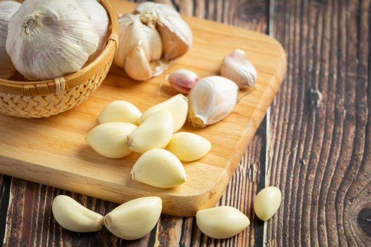

CHÙ Ụ RANG ME
General Overview:
The name "Chù ụ rang me" may sound unfamiliar, but many people have had the opportunity to savor this unique dish.
It is a special culinary secret of the people of Trà Vinh, a delicacy that you must definitely try when you set foot here.
Trà Vinh, with its beautiful beaches and the unique flavors of its specialties, is an interesting and enticing destination for every traveler.
In the list of delicious seafood dishes, we cannot forget to mention
"Chù ụ" stands out with its unique and enticing flavor. It's quite challenging to distinguish the similarities between "Chù ụ" and sesarmid crab because both belong to the crustacean family, with their rugged carapace and plump bodies. One distinctive feature worth noting is the face of the "Chù ụ", which always carries a sense of
The lunar month of April is the perfect time to savor "Chù ụ rang me", when they are in their prime, with tender, succulent, and irresistibly flavorful meat. It's also an opportunity to experience the fantastic seafood and fresh produce of this region. Creating the delicious "Chù ụ rang me" dish requires meticulous attention and culinary expertise. The distinctive aroma emanates from the tender "Chù ụ" meat, the crispiness of the "Chù ụ" shell, and the rich creaminess of the
Trà Vinh not only offers fascinating and marvelous travel experiences but also provides an opportunity to savor unique and delicious dishes. And "Chù ụ rang me" with its exquisite flavor, contributes to building the golden reputation of Trà Vinh in the hearts of every traveler.
crab,

sesarmid crab

"Chù ụ" stands out with its unique and enticing flavor. It's quite challenging to distinguish the similarities between "Chù ụ" and sesarmid crab because both belong to the crustacean family, with their rugged carapace and plump bodies. One distinctive feature worth noting is the face of the "Chù ụ", which always carries a sense of
melancholy.

The lunar month of April is the perfect time to savor "Chù ụ rang me", when they are in their prime, with tender, succulent, and irresistibly flavorful meat. It's also an opportunity to experience the fantastic seafood and fresh produce of this region. Creating the delicious "Chù ụ rang me" dish requires meticulous attention and culinary expertise. The distinctive aroma emanates from the tender "Chù ụ" meat, the crispiness of the "Chù ụ" shell, and the rich creaminess of the
"Chù ụ" carapace,

tamarind sauce.

Trà Vinh not only offers fascinating and marvelous travel experiences but also provides an opportunity to savor unique and delicious dishes. And "Chù ụ rang me" with its exquisite flavor, contributes to building the golden reputation of Trà Vinh in the hearts of every traveler.
The Way To Make "Chù Ụ Rang Me":
Ingredients:
1.
2.
3.
4.
"Chù ụ"

2.
Tamarind juice

3.
Garlic 
4.
Spices

(Cooking oil, sugar, fish sauce,...)
The steps to follow:
Step 1: Prepare the ingredients
Soak "Chù ụ" in ice water. Next, we separate the bud portion, then transfer the "Chù ụ" to a bowl while cutting off the head of the "Chù ụ" corner.
Step 2: Make tamarind sauce
I pour about 100 ml of warm water into a bowl and then gently dissolve the tamarind in the water. I add 2 tablespoons of sugar and 2 tablespoons of fish sauce to the bowl, and then mix it well to dissolve the sugar and fish sauce.
Step 3: Fry the "Chù ụ"
I lift the pan and pour cooking oil into it. I wait until the oil heats up, then I add the "Chù ụ" to fry until it turns golden evenly, and then I transfer it to a plate.
Step 4: Roast the "Chù ụ"
In a pan, add some cooking oil and finely chopped garlic, then sauté the garlic until fragrant. Next, add the "Chù ụ" rice that you prepared earlier. When you see the mixture start to simmer, add the tamarind sauce. Finally, just mix in the "Chù ụ" and stir well to ensure it absorbs the flavors, and you have completed the delicious "Chù ụ rang me".
Soak "Chù ụ" in ice water. Next, we separate the bud portion, then transfer the "Chù ụ" to a bowl while cutting off the head of the "Chù ụ" corner.
Step 2: Make tamarind sauce
I pour about 100 ml of warm water into a bowl and then gently dissolve the tamarind in the water. I add 2 tablespoons of sugar and 2 tablespoons of fish sauce to the bowl, and then mix it well to dissolve the sugar and fish sauce.
Step 3: Fry the "Chù ụ"
I lift the pan and pour cooking oil into it. I wait until the oil heats up, then I add the "Chù ụ" to fry until it turns golden evenly, and then I transfer it to a plate.
Step 4: Roast the "Chù ụ"
In a pan, add some cooking oil and finely chopped garlic, then sauté the garlic until fragrant. Next, add the "Chù ụ" rice that you prepared earlier. When you see the mixture start to simmer, add the tamarind sauce. Finally, just mix in the "Chù ụ" and stir well to ensure it absorbs the flavors, and you have completed the delicious "Chù ụ rang me".
Source: excerpt from the YouTube channel "Đặng Huyền"
Enjoy The Product:


A plate of "Chù ụ rang me", meticulously prepared, glistened with a radiant golden hue right before my eyes.
This was a unique and mesmerizing meal, captivating from the alluring aroma to the pinnacle of flavors.
The delicious and distinctive fragrance emanated from each piece of "Chù ụ" meat, clinging tenderly amidst small, crispy regions, creating an exquisite harmony with the crispiness of the "Chù ụ" skin.
The delightful combination of the sweet and tangy tamarind sauce with the tender "Chù ụ" meat creates a unique and harmonious flavor experience. The subtle yet robust aromas of garlic and scallions are the perfect finishing touch for this exquisite feast.
The delightful combination of the sweet and tangy tamarind sauce with the tender "Chù ụ" meat creates a unique and harmonious flavor experience. The subtle yet robust aromas of garlic and scallions are the perfect finishing touch for this exquisite feast.
Prices: The price varies from 100,000 to 150,000 VND per dish.